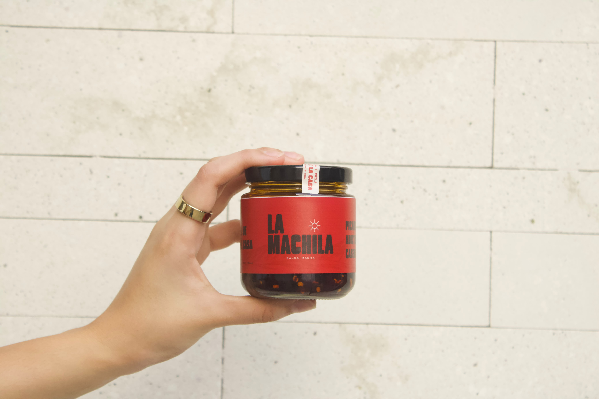

NUESTRAS RAÍCES
Una marca que toma inspiración de Sonora y de su identidad.
NUESTRA HISTORIA
Una salsa con sabor y personalidad sonorense.

CÓMO EMPEZÓ TODO
La Machila nace de una idea sencilla: crear una salsa macha con personalidad, sabor y un toque muy nuestro.
Inspirada en los sabores que forman parte de nuestra región, la marca busca convertir una salsa en ese ingrediente que siempre quieres tener cerca.
Su nombre refleja una expresión cercana a nuestra identidad sonorense y una forma auténtica de disfrutar la comida.

LO QUE NOS DEFINE
Una marca que toma inspiración de Sonora y de su identidad.
Una propuesta de salsa macha pensada para acompañar diferentes platillos.
Cercana, auténtica y con una manera propia de hacer las cosas.
SEGUIMOS CREANDO
La de la Casa, Arándano y La Toreada. Tres variedades diferentes que comparten la esencia de La Machila.
Hecha en Sonora, México.